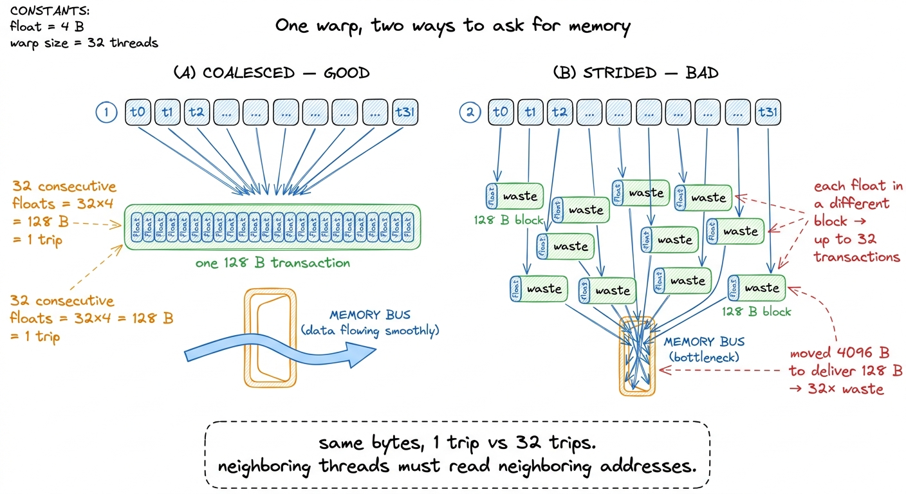
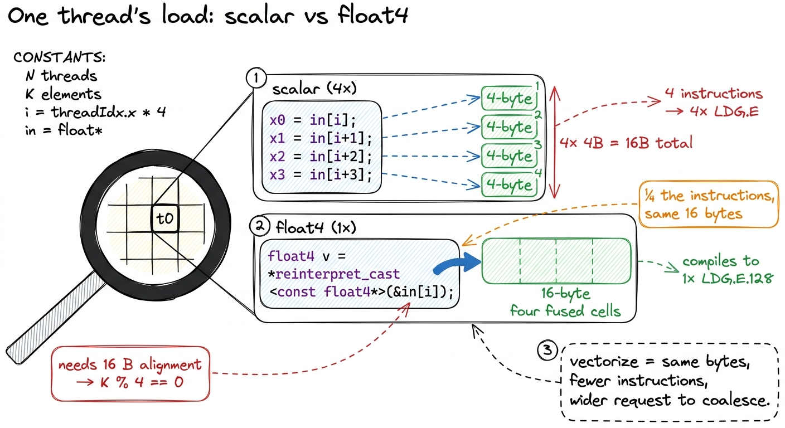
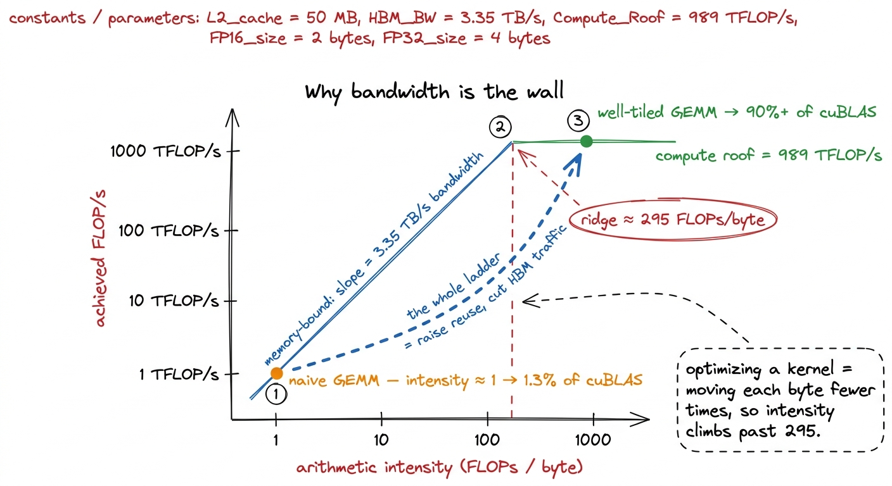
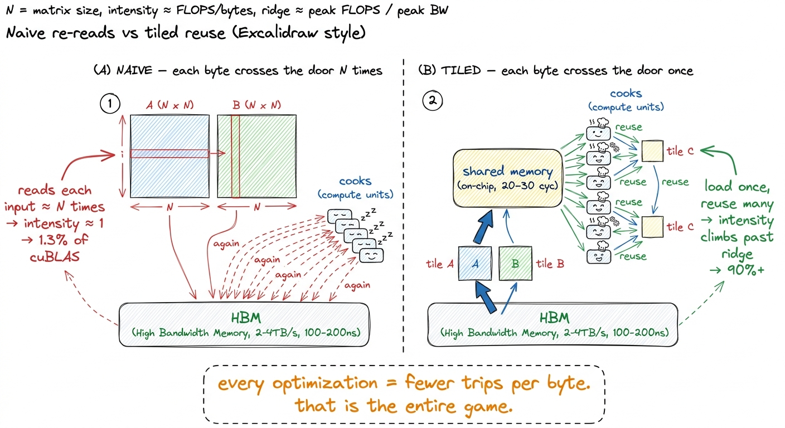
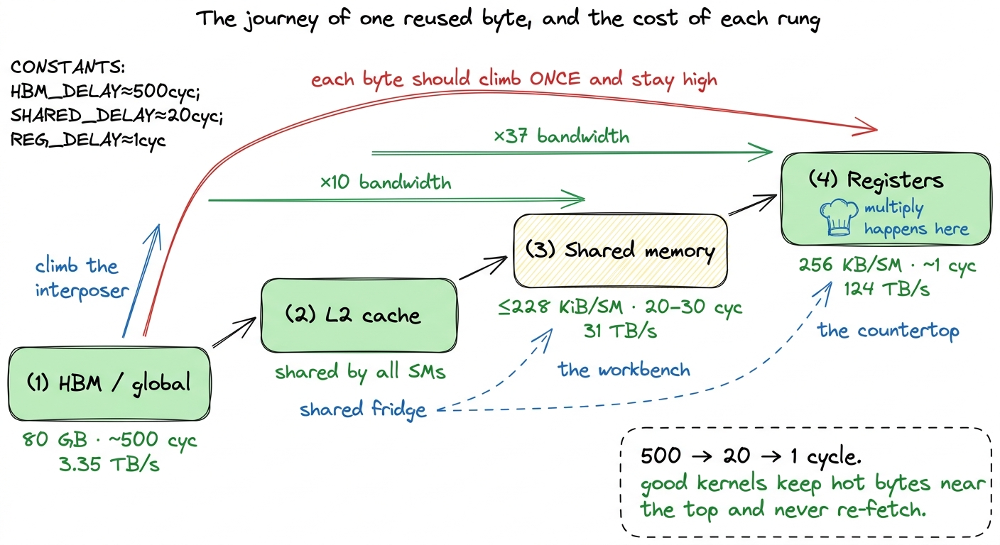

HBM, global memory & the package HBM
Here is a question that sounds too simple to be interesting, but turns out to be the hinge that everything on this site swings on: when your GPU is slow, what is it actually waiting for?
Most people's first guess is "the math." The chip has to do billions of multiplications, so surely the multipliers are the bottleneck. That guess is almost always wrong. The multipliers on a modern data-center GPU are so fast, and there are so many of them, that they finish their work and then sit idle — tapping their feet — waiting for numbers to arrive. The thing they are waiting on is memory. Specifically, they are waiting on bytes crawling in from a stack of DRAM chips sitting a few millimeters away from the compute die, connected by a highway of wires etched into a slab of silicon.
That stack of chips is called High-Bandwidth Memory (HBM), and when we say a kernel is "memory-bound," we mean it is waiting on that. So before we write a single kernel, I want to look hard at where global memory actually lives, how it is wired to the chip, and why its bandwidth — enormous as it is — is the wall almost every kernel eventually hits. If you understand this one physical object, every optimization later in the GEMM ladder stops feeling like a bag of tricks and starts feeling inevitable.
Let me start from zero. You do not need to know anything about GPUs to follow this. You just need to be willing to ask "but why?" a few times in a row.
Two numbers to tape above your desk
The two numbers I keep in my head for an H100 SXM5 — the workhorse GPU behind most of the models you have talked to — are these:
- 80 GB of capacity.
- About 3.35 TB/s of bandwidth.
Capacity is how much it can hold: 80 gigabytes, enough for a mid-sized model's weights. Bandwidth is how fast it moves that stuff in and out: 3.35 terabytes per second. Say it out loud. Three and a third trillion bytes, every second. It sounds like a number that could never be a bottleneck — a whole 80 GB should drain in about 24 milliseconds at that rate. How could that ever be too slow?
By the end of this article I want you to feel why 3.35 TB/s, which sounds infinite, is in practice the scarcest resource on the chip — the one I learned to spend as carefully as money. Hold onto those two numbers. They are the boundary conditions for everything else.
 figure rendering · The mental model for the whole site: fast cooks, a narrow pantry door.
figure rendering · The mental model for the whole site: fast cooks, a narrow pantry door.That kitchen picture is the mental model I will reuse the whole way through. The cooks are the math units. The pantry is HBM. The doorway is bandwidth. Every kernel we ever write is, underneath the jargon, an argument about that doorway.
Why is the "pantry" built the way it is?
Let's earn the 3.35 TB/s number instead of just accepting it. Where does bandwidth even come from?
Bandwidth is width times clock. If you have a memory bus that is W bits wide running at f transfers per second, you get roughly W × f bits per second. So there are two ways to move more bytes: make the wires switch faster (raise the clock), or add more wires (raise the width). Clocks are hard to raise — faster switching burns more power and generates more heat, and we are already near the physical limits. So the interesting lever is width.
Here is where HBM gets clever, and where I first stopped finding the bandwidth number arbitrary. A gaming card uses GDDR memory: ordinary DRAM chips laid flat on the circuit board, each talking to the GPU over a bus about 32 bits wide. To get width, you add more chips around the edge of the board — but you run out of edge, and long board wires are slow and power-hungry.
HBM refuses to lay the chips flat. Instead it stacks them. You take several DRAM dies and pile them vertically, one on top of another, into a single tall block, sitting on top of a base logic die — the HBM controller — that handles the interface to the outside world.1 The number of dies per stack has climbed each HBM generation. What matters for us is not the exact count but the consequence: stacking is what lets one stack expose a preposterously wide interface without needing a physically enormous chip. To move data straight up through that tower, the dies are pierced by through-silicon vias (TSVs) — literal microscopic holes drilled through the silicon and filled with conductor, so a signal travels vertically up the stack instead of routing around the edge.
Why go to all this trouble? Because stacking buys width. Each HBM stack talks to the GPU over roughly 1024 data links — a bus 1024 bits wide, per stack. Compare that to the 32-bit-per-chip bus of ordinary DRAM. That is 32× the width from one stack alone, and an H100 has several stacks. HBM runs at a modest clock — lower than GDDR, actually — and still delivers terabytes per second, purely because a thousand-plus wires are all switching at once. Width wins.
But now we have a new problem, and it is a physical one. A thousand wires per stack, times several stacks, is thousands of connections that all have to reach the compute die. A normal circuit board simply cannot route that many wires in that small a space — board wiring is too coarse. This is where the silicon interposer comes in: a slab of silicon that sits underneath both the GPU die and the HBM stacks, acting as a tiny, ultra-dense circuit board. The wires connecting memory to compute are etched into the interposer at chip-fabrication density — thousands of times finer than board wiring — which is the only way you fit 1024 links per stack into a few square centimeters. The whole assembly — GPU die plus HBM stacks sitting on the interposer — is what NVIDIA means when it says "the package."
 figure rendering · The package. Memory stacked vertically (TSVs), wired to compute horizo
figure rendering · The package. Memory stacked vertically (TSVs), wired to compute horizoThere is a second payoff to all this packaging, and it is about distance. Because the DRAM sits millimeters from the compute die on the same interposer — rather than centimeters away across a board — the links can run wide and fast at low energy per bit. Distance costs energy and time; the interposer keeps both small. That proximity is exactly why global-memory latency, though high in absolute terms at roughly 500 clock cycles, is not higher still.2 500 cycles is a useful order-of-magnitude figure for a global-memory access that misses every cache. On-chip shared memory is 20–30 cycles; a register read is effectively one cycle, basically free. The whole memory-hierarchy game is about turning 500-cycle accesses into 20-cycle ones.
Sit with that latency number for a second, because it is the other half of the story bandwidth doesn't tell you. 500 cycles. A single lonely access to HBM — one thread asking for a number in no cache — makes the chip wait roughly 500 clock ticks for the answer. In those 500 cycles an SM could have issued thousands of arithmetic instructions. So the pantry is not just narrow; any single trip also takes a long time. Bandwidth is how much you carry per trip; latency is how long the trip takes. We will need both.
From physical bytes to what a CUDA programmer sees
Now let's climb up one level of abstraction, from silicon to the code you write.
From a CUDA programmer's point of view, that 80 GB of HBM is called global memory — the big, slow, everyone-can-see-it pool. Every input tensor you cudaMalloc, every output you write back, lives here. It is the only memory large enough to hold a real model's weights, and the only memory that persists across kernel launches. It is also, as we will keep seeing, the thing you are almost always waiting on.
But there is a subtlety that trips up nearly everyone the first time, and it is worth stopping on because it flatly contradicts the name. Global memory is not the only thing living in those DRAM dies. There is a second, sneakier resident: local memory. And here is the trap — the name is a lie. Local memory is not local to anything fast. It is the per-thread private storage the compiler falls back on when a thread needs more state than fits in its registers.
To see why that matters, we need to know the register budget. Each Streaming Multiprocessor (SM) — think of it as one of the 132 independent little cores on the chip — has a 256 KB register file (65536 32-bit registers), and a single thread can use at most 255 registers. Registers are the fastest memory on the whole machine: a read takes about one cycle, and the register file delivers on the order of 124 TB/s of bandwidth — roughly 37× the bandwidth of HBM.3 Registers are private to each thread, with one exception: warp-shuffle primitives (__shfl_sync and friends) let threads in the same warp read each other's registers directly, which is how warp-level reductions avoid a shared-memory round-trip. When a thread's variables live in registers, the cooks are fed instantly.
So the compiler tries hard to keep your variables in registers. But when a kernel's per-thread working set exceeds what fits — too many live variables at once, a big local array, deep inlining — the compiler has no choice. It spills the excess. And here is the sting: those spilled values do not go to some emergency on-chip scratchpad. They go to local memory, and local memory physically resides in global memory — the exact same HBM dies, at the exact same ~500-cycle latency.4 Spilled local memory does get to use the L1/L2 caches on the way, so a hot spill is not always a full HBM round-trip. But you cannot count on it, and a spill in an inner loop is one of the most reliable ways to wreck a kernel's performance.
This is the trap that caught me the first time I "optimized" a kernel by hoarding everything in registers. Push register pressure too high and the compiler quietly spills, and your blazing on-chip variable is secretly a 500-cycle HBM access wearing a register's name. Nothing in your source code changes; the variable still looks like a fast local. But under the hood, every touch of it is a trip through the narrow pantry door.
// Innocent-looking. If N is large and this array is indexed
// dynamically, `scratch` cannot live in registers — it spills
// to LOCAL memory, i.e. to HBM, at ~500 cycles per access.
__global__ void danger(const float* in, float* out, int N) {
float scratch[64]; // per-thread private array
for (int i = 0; i < 64; ++i)
scratch[i] = in[threadIdx.x + i * N];
// ... dynamic indexing here forces scratch into local memory ...
}When we get to the register-tiling kernels later in the ladder, this is why I learned to watch the compiler's spill behavior in the SASS obsessively — it is not optional, it is the difference between the 68.7%-of-cuBLAS 2D-tile kernel and something far slower.
 figure rendering · The pyramid and the trap. A register spill is a secret HBM access, bec
figure rendering · The pyramid and the trap. A register spill is a secret HBM access, becBut what actually happens when a warp asks for memory?
Now we get to the part that changes how you write every load. So far I have talked about "a thread" asking for "a byte." But the GPU does not run one thread at a time. It runs threads in lockstep groups of 32, called warps. When a warp executes a load instruction, all 32 threads issue their load at the same instant. What happens next depends entirely on which addresses those 32 threads asked for — and this is where the doorway gets interesting.
Here is the key fact, and it comes straight from how DRAM physically works: HBM does not hand out one byte at a time. It hands out data in fixed-size chunks. The natural unit is a 128-byte transaction — think of it as the smallest tray that comes through the pantry door.5 Under the hood the 128-byte line is itself made of four 32-byte "sectors," and the hardware can move a single sector if that is all you asked for. So a badly-strided access is not always a full 128-byte waste — but it is still moving far more bytes than useful data, which is the whole problem. You do not get to ask for 4 bytes and pay for 4 bytes. You ask for anything inside a 128-byte block, and the hardware brings the whole 128-byte tray.
So now think about our warp of 32 threads, each wanting one 4-byte float. Watch what happens in two different cases.
Case 1 — the good one. Thread 0 reads address n, thread 1 reads n+1 (i.e. the next float), thread 2 reads n+2, ... thread 31 reads n+31. All 32 threads want 32 consecutive floats. That is 32 × 4 = 128 bytes — exactly one tray. The hardware notices all 32 requests fall inside a single 128-byte block, and it coalesces them into one transaction. One trip through the door feeds all 32 cooks. This is a coalesced access, and it is what you want every single time.
Case 2 — the disaster. Same 32 threads, but now they are strided: thread 0 reads n, thread 1 reads n+32, thread 2 reads n+64, and so on. Each thread's float lands in a different 128-byte block. The hardware cannot combine them. It must issue up to 32 separate transactions, each dragging a full 128-byte tray through the door to deliver just 4 useful bytes. You asked for 128 useful bytes total and moved 32 × 128 = 4096 bytes to get them. That is 32× the traffic for the same result — you have made the doorway 32 times narrower with nothing but a bad access pattern.
Let me say the punchline plainly, because it is the single most important practical lesson about global memory: the same amount of useful data can cost you 1 trip or 32 trips through the pantry door, depending only on how neighboring threads' addresses line up. The bytes are identical. The traffic is 32× different.

figure rendering · Coalescing. Whether 32 threads cost one transaction or thirty-two depeThis is not an academic edge case. It is the reason the naive GEMM in kernel 1 is so catastrophically slow. When it walks down a column of B, adjacent threads end up reading addresses that are N floats apart — the strided disaster, case 2 — so almost every load is uncoalesced and the effective bandwidth collapses to a fraction of that 3.35 TB/s. The very first real optimization on the ladder is nothing more than reindexing the loads so adjacent threads read adjacent addresses. It moves no less data in principle; it just stops wasting the doorway.
Can we make each trip bigger?
Coalescing gets us to one 128-byte tray per warp instead of thirty-two. Natural next question: can a single thread ask for a bigger tray in one instruction?
Yes — and this is the trick behind vectorized loads. By default, float x = in[i]; issues one instruction that loads 4 bytes. But CUDA lets a thread load a float4 — four floats packed together, 16 bytes — in a single instruction. In the compiled SASS you see this as a LDG.E.128 instruction: one "load global, 128 bits" op instead of four separate 32-bit loads.6 There is a catch: 16-byte vector loads require 16-byte alignment. In a GEMM this means the inner dimension K must be a multiple of 4 for the float4 reinterpret-cast to be legal — one of those small constraints that silently governs a lot of kernel code.
Why does that help, when it moves the exact same 16 bytes? Because it cuts the instruction count by 4×. Every load instruction the SM issues costs a slot in the instruction pipeline and a chunk of bookkeeping. If a warp can express its memory request in a quarter as many instructions, the instruction-issue hardware stops being the bottleneck, and the memory system gets a wider, cleaner request to coalesce. When a full warp of 32 threads each issues one float4 load of consecutive data, they collectively ask for 32 × 16 = 512 bytes of contiguous memory in one shot — four back-to-back 128-byte trays, expressed in 32 instructions instead of 128.
So there are two independent levers on the doorway, and they stack:
- Coalescing — make 32 threads' addresses contiguous, so the hardware fuses them into one transaction instead of many.
- Vectorizing — make each thread request 16 bytes at once, so fewer instructions carry the same bytes.
Both are ways of getting more useful work out of each pass through the narrow door. Neither changes how many useful bytes the algorithm needs. And that observation — that the real prize is reducing how many useful bytes cross the door at all — is where we finally get to the deepest idea.

figure rendering · Zooming into one thread. A float4 packs four loads into one 128-bit inThe idea the whole ladder is built on
Now I can state the thesis this entire section has been building toward, the one that reframed how I read every profile afterward.
You cannot compute on a byte you do not have. Every FLOP a tensor core performs consumes operands that started life in HBM, and every result eventually returns there. The cooks work far faster than the door can supply — so for a huge class of kernels, the ceiling is set not by the 989 TFLOP/s the tensor cores can do, but by the 3.35 TB/s at which HBM can move bytes.
There is a clean way to make this precise. For any kernel, define its arithmetic intensity: the number of FLOPs it does divided by the number of bytes it moves from HBM.
arithmetic intensity = total FLOPs / total bytes moved from HBMThink about what this ratio measures. It is how much cooking you get out of each ingredient that comes through the door. A low intensity means you drag a byte in, do one multiply, and throw it away — the cooks are starving. A high intensity means each byte that arrives gets reused many times before you fetch the next one — the cooks are busy.
Now put the two machine limits together. If a kernel has intensity I FLOPs per byte, and the door supplies 3.35 TB/s, then the most compute you can sustain is I × 3.35 TFLOP/s — because that is all the bytes you can get. But the cooks max out at 989 TFLOP/s no matter what. So the achievable performance is the smaller of the two: a rising line (I × 3.35, memory-bound) that eventually hits a flat ceiling (989, compute-bound). The crossover point — where the rising line meets the flat roof — is called the ridge point:
ridge point = 989e12 / 3.35e12 ≈ 295 FLOPs per byteBelow 295 FLOPs per byte, you are memory-bound: your speed is set entirely by bandwidth, and the world's cleverest math scheduling cannot save you.7 The A100 that the reference sources measure sits at a much lower ridge — around 13 FLOPs/byte for its FP32 pipes (≈19.5 TFLOP/s over ≈1.5 TB/s). These aren't a strict apples-to-apples comparison — the 295 here is a BF16 tensor-core figure — but the direction is unmistakable: compute has grown faster than bandwidth generation over generation, so the ridge keeps sliding right and the set of "automatically compute-bound" kernels keeps shrinking. Above 295, you are compute-bound: the door is fast enough, and now the cooks are the limit. That single crossover number is the dividing line between the two worlds every kernel lives in.

figure rendering · The roofline. The naive kernel lives on the memory-bound slope; everyDoing the GEMM math by hand
The roofline is only convincing if you can compute a real intensity yourself, so let's do it for the one kernel this whole site orbits: matrix multiply.
Take a square N × N matmul, C = A × B. How much math is there? Each of the N² output entries is a dot product of length N — that is N multiplies and N adds, roughly 2N FLOPs per output. Across all N² outputs:
total FLOPs ≈ 2 · N³How many distinct numbers does the problem actually need to touch? Two input matrices and one output, each N² entries:
minimum bytes needed ≈ 3 · N² · 4 (4 bytes per float)Divide, and the intrinsic intensity — the best you could ever do, if you fetched every number exactly once — is:
intensity ≈ 2N³ / (12 N²) = N / 6 FLOPs per byteLook at that result: intensity grows linearly with N. For a 64 × 64 matmul, N/6 ≈ 10 — memory-bound, below the 295 ridge. But for a 4096 × 4096 matmul, N/6 ≈ 683 — comfortably past the ridge. So a big GEMM has more than enough arithmetic to be compute-bound. The problem wants to be fast.
So why does the naive kernel hit a humiliating 1.3% of cuBLAS? Because that N/6 was the intrinsic intensity — the intensity you get only if you read each input number exactly once. The naive kernel does the opposite. To compute each output element it re-reads a full row of A and a full column of B straight from HBM, and it does this for every one of the N² outputs. Each input number is dragged through the door not once but roughly N times. That multiplies the bytes moved by N, which divides the actual intensity by N, dropping it right back down onto the memory-bound slope near intensity ≈ 1. The gift of N/6 intensity is thrown in the trash by redundant traffic.
And now every optimization on the ladder has a single, unified meaning. Coalescing, shared-memory tiling, register tiling, vectorized float4 loads — every one of them is a scheme to move each byte from HBM fewer times and reuse it more once it has arrived on-chip. Tiling loads a block of A and B into fast shared memory once, then reuses it for many outputs, recovering the intensity the naive kernel threw away. That is not a bag of tricks. It is one idea — touch the DRAM as rarely as possible — wearing many costumes.

figure rendering · The core move. The naive kernel drags each operand through the door NWhere does the byte go after it climbs the interposer?
There is one more layer worth naming, because "reuse it on-chip" quietly assumes there is somewhere fast to put it. There is, and it forms a hierarchy — the pyramid from the earlier figure, now with the middle filled in.
Between the 132 SMs and the HBM sits the L2 cache: a big pool of on-chip SRAM shared by all the SMs. Every access to global memory passes through L2 on its way in.8 On the H100 the L2 is physically split into two partitions, one serving each group of four GPCs, connected by a crossbar. An access to the "near" partition is cheaper than one that has to hop across to the "far" one — a detail that occasionally matters for the last few percent, though it is far below coalescing and tiling in importance. If two SMs need the same weights, the second one may find them already sitting in L2 instead of paying the full 500-cycle HBM trip. L2 is the shared refrigerator right outside the pantry.
Closer still, inside each SM, is a 256 KiB block of SRAM that the programmer splits between the L1 cache and shared memory — up to 228 KiB of it can be assigned to shared memory (a configurable maximum you opt into with cudaFuncSetAttribute, not the default, and about 1 KiB per block is reserved for system use). Shared memory is the on-chip workbench each block of threads gets: around 20–30 cycles to access and roughly 31 TB/s of bandwidth — nearly ten times the bandwidth of HBM, and over twenty times faster to reach. This is where a tile lives after tiling pulls it in. Above that sit the registers: ~1 cycle, ~124 TB/s, the countertop right under the cook's hands.
So the full journey of a reused byte is: climb the interposer from HBM (500 cyc), land in L2 (shared fridge), get pulled into shared memory (the workbench, 20–30 cyc), and finally into registers (the countertop, ~1 cyc) where the multiply happens. Every rung up that ladder is faster and narrower. The art of a good kernel is getting each byte as high up the ladder as possible and keeping it there while you extract every bit of reuse — so it never has to make the 500-cycle climb again.

figure rendering · The on-chip hierarchy as a pipeline. Each rung is faster and narrower;What this sets up
So the physical story and the performance story turn out to be the same story. HBM's 1024-links-per-stack, TSV-pierced, interposer-wired design exists for one reason: to make 3.35 TB/s possible. And even that heroic number is the binding constraint for most real kernels, because compute has outrun bandwidth and the ridge point sits all the way out at ~295 FLOPs per byte. Global memory holds your tensors; local memory secretly holds your register spills in the very same dies; a warp's accesses cost one trip or thirty-two through the door depending only on their addresses; and the job of a kernel engineer is, more than anything else, to touch those dies as rarely as possible.
This is not abstract. It is exactly why production inference stacks obsess over memory. FlashAttention is famous precisely because it computes attention without ever writing the giant N × N score matrix back to HBM — it keeps the whole thing on the shared-memory workbench, slashing the bytes that cross the door. vLLM's paged KV-cache packs more of that hot cache into the 80 GB pantry so fewer requests spill. Every one of these is the same move we just derived by hand: raise arithmetic intensity, cut HBM traffic, move each byte fewer times.
That is why the next thing we build is not a faster multiply but a clear picture of the whole chip above the memory — the SMs, the register file, and the on-chip SRAM where reused bytes actually live. Once we can see where a byte goes after it climbs the interposer, the coalescing and tiling optimizations that carry the GEMM ladder from 1.3% to 93.7% of cuBLAS stop looking like tricks and start looking like the only sensible response to the hardware in front of us.